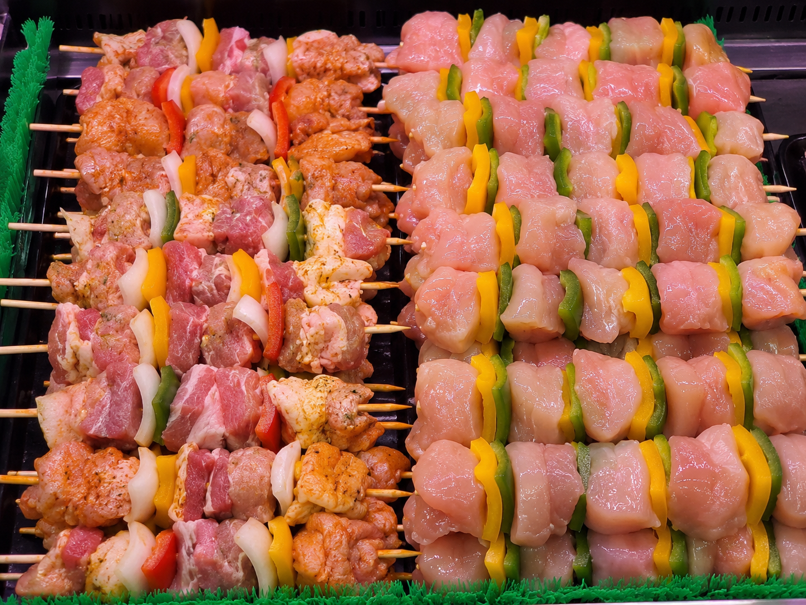
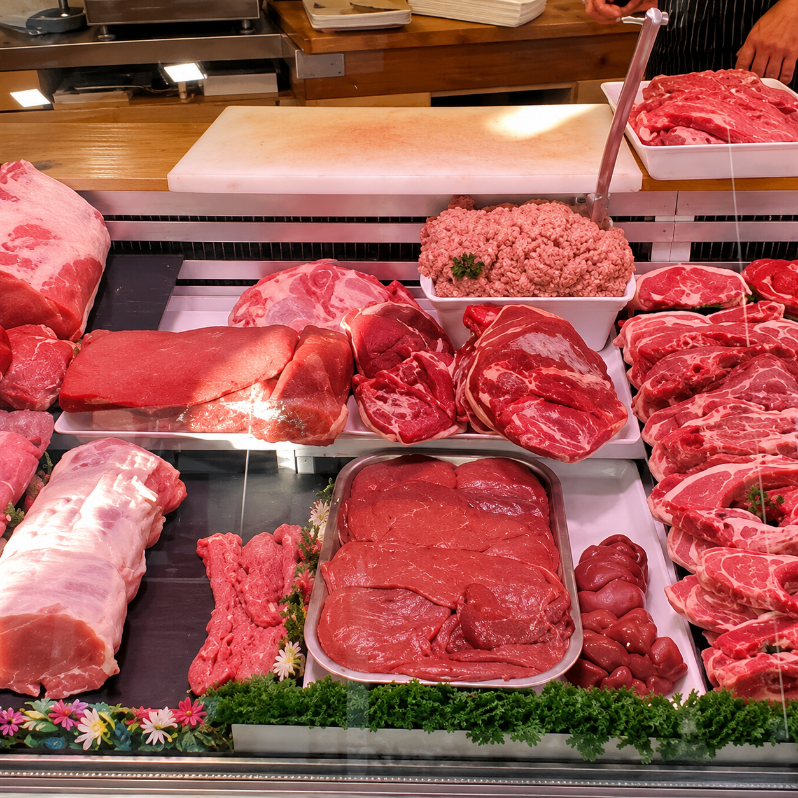
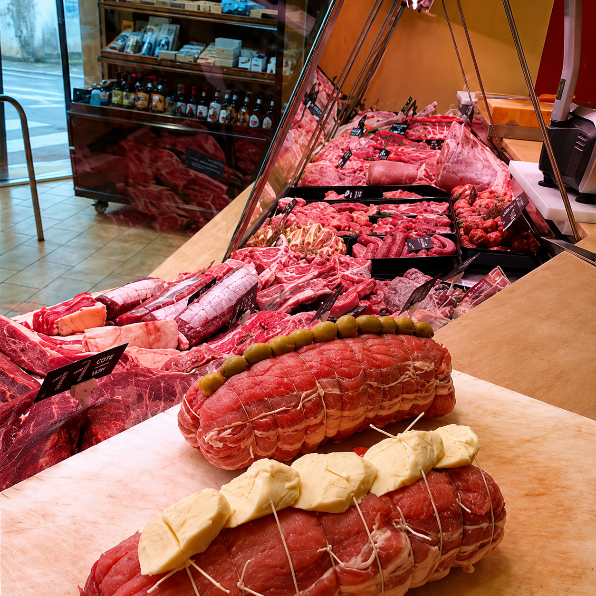
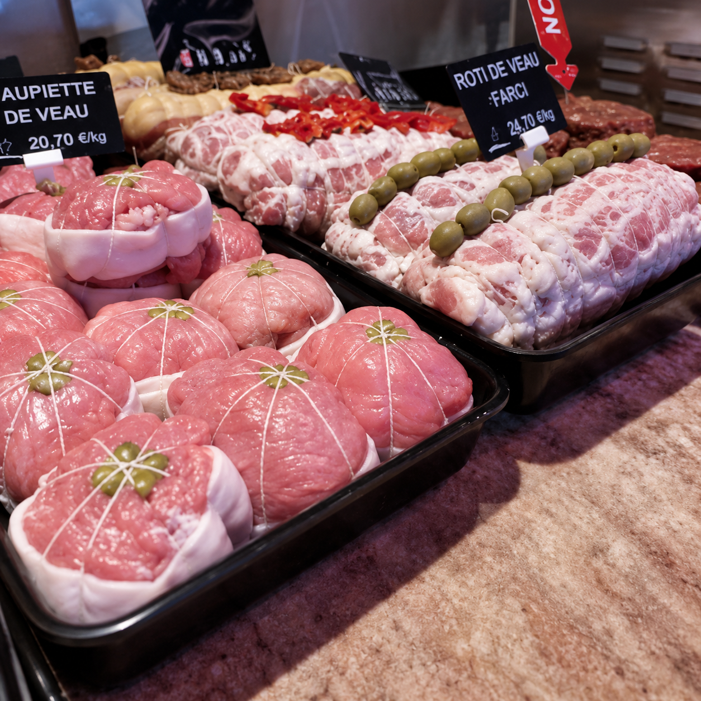
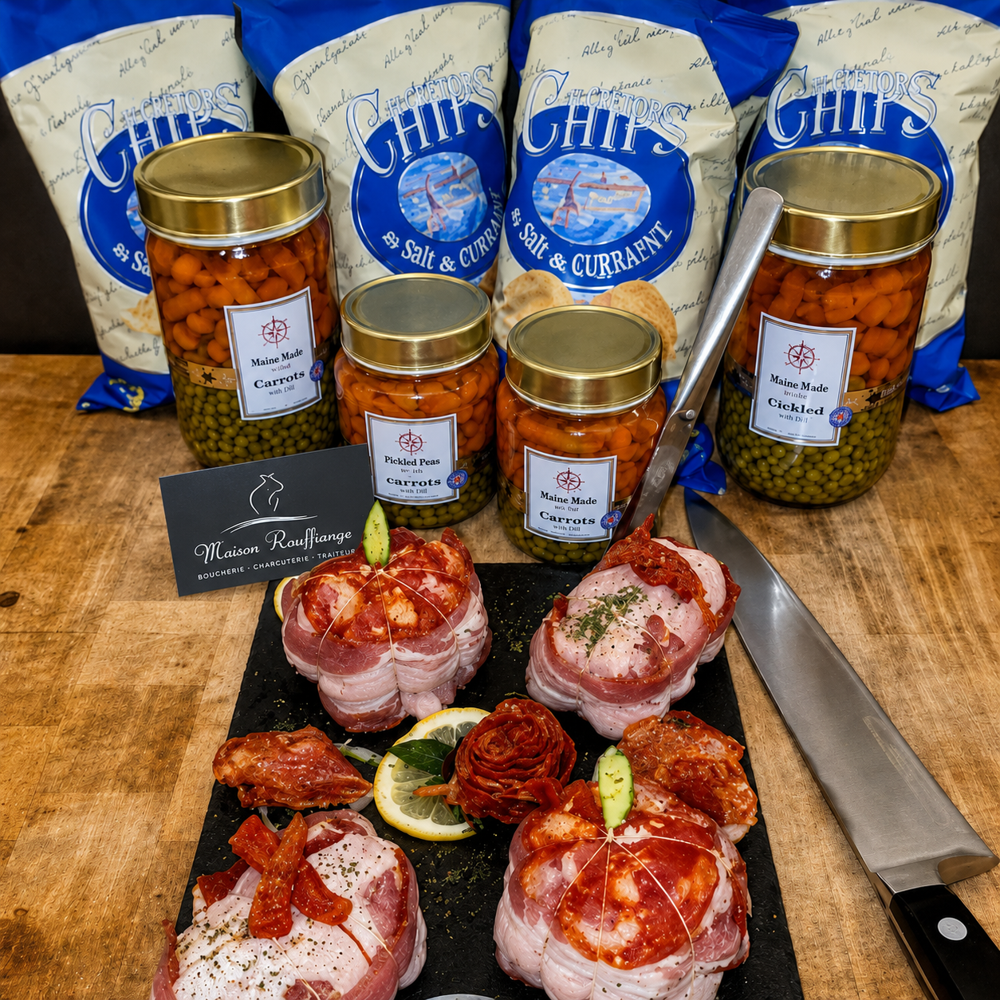

Brochettes maison
Volaille, bœuf, porc ou marinades selon les envies et les arrivages.
Des viandes choisies avec exigence, préparées selon vos besoins et accompagnées des conseils de notre équipe.
Ces planches permettent de découvrir les principales pièces proposées en boutique.
Passez la souris sur une pièce
Passez la souris sur une pièce
Passez la souris sur une pièce
Passez la souris sur une pièce
Passez la souris sur une pièce
Pour les repas d’été, la Maison Rouffiange prépare une sélection généreuse de brochettes, saucisses, pièces marinées et viandes à griller.

Volaille, bœuf, porc ou marinades selon les envies et les arrivages.

Les indispensables du barbecue, à commander pour vos repas du week-end.

Des préparations prêtes à cuire pour gagner du temps sans perdre en gourmandise.

Nos conseils pour choisir le bon morceau, la bonne quantité et la bonne cuisson.


